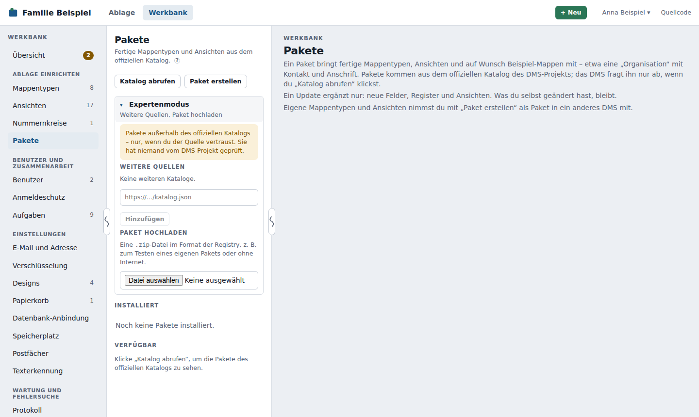

Pakete¶
Ein Paket bringt fertige Mappentypen, Ansichten und auf Wunsch Beispiel-Mappen mit – etwa das Basis-Paket mit dem Mappentyp „Organisation“ für Firmen, Behörden, Ärzte und Versicherungen. Statt Feld für Feld in der Werkbank zu bauen, installierst du es mit wenigen Klicks unter Werkbank → Pakete.
Pakete kommen aus dem offiziellen Katalog des DMS-Projekts (dms-registry). Jedes Paket dort ist Open Source und wurde vom Maintainer freigegeben. Meist sind es Konfigurationspakete (Mappentypen, Ansichten, Beispiele). Pakete mit Code lassen sich installieren und einstellen, ihr Code läuft aber erst mit dem Paket-Läufer.
Katalog abrufen¶
Das DMS fragt den Katalog nur auf Knopfdruck ab, nie im Hintergrund: Klicke Katalog abrufen. Die Seite zeigt dann zwei Listen:
- Installiert – Pakete in diesem DMS, mit Version und Herkunft
- Verfügbar – Pakete aus dem Katalog, die noch nicht installiert sind
Ein Klick auf ein Paket zeigt Name, Beschreibung, Version, Lizenz, Autor, die nötige DMS-Version, Abhängigkeiten, die enthaltenen Mappentypen und Ansichten sowie Links zum README und zu den Änderungen.
Das DMS lädt den Katalog von https://raw.githubusercontent.com/motom001/dms-registry/gh-pages/katalog.json. Dafür muss das DMS selbst ins Internet kommen. Einen Proxy für ausgehende Abrufe kann das DMS nicht einstellen. Ohne Internetzugang lädst du ein Paket als Datei hoch (siehe Expertenmodus).
Installieren¶
- Wähle ein Paket unter Verfügbar und ggf. eine ältere Version.
- Klicke Installieren …. Die Vorschau zeigt, was angelegt wird:
- je Mappentyp die Zahl der Felder und die Kennung, z. B.
basis_organisation - die Ansichten, mit Elternansicht
- die Abhängigkeiten und ob sie installiert sind
- wie viele Beispiel-Mappen es gibt
- je Mappentyp die Zahl der Felder und die Kennung, z. B.
- Namen: Gibt es einen Mappentyp oder eine Ansicht (auf oberster Ebene) mit gleichem Namen schon, sagt die Vorschau das und schlägt einen anderen vor, z. B. „Organisation (Basis)“. Du kannst jeden Namen ändern.
- Beispiel-Mappen legt das DMS nur an, wenn du den Haken setzt.
- Fehlende Pakete mitinstallieren: Braucht das Paket ein anderes, das noch fehlt, installiert das DMS es auf Wunsch vorher mit (die neueste passende Version aus dem Katalog).
- Klicke Installieren.
Vor dem Anlegen prüft das DMS:
- ob die eigene Version passt (sonst erst das DMS aktualisieren),
- ob alle Abhängigkeiten installiert sind und in einer passenden Version,
- ob das heruntergeladene Archiv zur Prüfsumme (SHA-256) im Katalog passt. Passt sie nicht, installiert das DMS nichts.
Angelegt wird über dieselben Funktionen wie in der Werkbank, mit allen Prüfregeln. Die Kennungen bekommen das Paket-Präfix (<paket>_<schluessel>), damit sich Pakete nicht in die Quere kommen; Verweise auf Mappentypen anderer Pakete löst das DMS auf. Scheitert etwas, nimmt das DMS alles zurück – es bleibt nichts halb angelegt.
Mappentypen aus Paketen tragen in Werkbank → Mappentypen den Hinweis Paket …. Du kannst sie danach wie jeden anderen Mappentyp anpassen.
Über die Katalog-Webseite¶
Den Katalog gibt es auch als Webseite: Paketkatalog (auch auf der Startseite der Handbücher). Dort siehst du je Paket die Beschreibung, was angelegt wird, Rechte, Änderungen und ältere Versionen.
- Klicke beim Paket In meinem DMS installieren.
- Beim ersten Mal fragt die Seite nach der Adresse deines DMS, z. B.
https://dms.example.de. Sie merkt sie sich nur in deinem Browser; über DMS-Adresse oben änderst du sie. Die Webseite sendet nichts an dein DMS und speichert keine Zugangsdaten. - Dein DMS öffnet Werkbank → Pakete mit der Vorschau genau dieses Pakets (Adresse
…/werkbank/pakete?installieren=<paket>@<version>). Bist du nicht angemeldet, meldest du dich zuerst an und landest danach wieder dort. Andere Benutzer sehen einen Hinweis, dass nur Administratoren Pakete installieren. - Das DMS holt Paket und Prüfsumme selbst aus dem offiziellen Katalog – Angaben im Link, die auf andere Quellen zeigen, zählen nicht. Gibt es das Paket oder die Version dort nicht, sagt das DMS es.
- Installiert wird erst, wenn du auf „Installieren“ klickst. Der Link allein ändert nichts. Ist das Paket schon installiert, zeigt die Vorschau das; ein Update bietet sie an, wenn der Link eine neuere Version nennt.
Installierte Pakete¶
Je Paket merkt sich das DMS Version, Herkunft (der Katalog), wann und von wem es installiert bzw. aktualisiert wurde und welche Mappentypen und Ansichten dazugehören. Diese Angaben sind Teil der Sicherung und des Vollexports (struktur/pakete.json). Installieren, Aktualisieren und Entfernen stehen im Protokoll.
Aktualisieren¶
Auf neue Versionen prüfen fragt den Katalog ab (auf Knopfdruck) und markiert Pakete, für die es Neueres gibt. Im Paket zeigt Auf … aktualisieren … eine Vorschau mit dem, was dazukommt, und einem Link zu den Änderungen.
Ein Update ergänzt nur:
- neue Mappentypen und Ansichten,
- neue Felder und Register bei vorhandenen Mappentypen.
Es löscht nichts und überschreibt nichts, was du selbst geändert hast: Hast du einen Mappentyp umbenannt, Felder ergänzt oder eine Ansicht gelöscht, bleibt das so.
Entfernen¶
Entfernen löscht die Mappentypen und Ansichten des Pakets und seinen Eintrag. Das geht nur,
- solange es keine Mappen dieser Mappentypen gibt (auch nicht im Papierkorb) und
- kein anderes Paket davon abhängt.
Sonst nennt das DMS die Gründe. Beispiel-Mappen löschst du vorher wie andere Mappen.
Einstellungen¶
Manche Pakete brauchen Einstellungen – etwa Regeln, nach denen sie Post zuordnen, oder ein Zugangsschlüssel für einen Dienst. Das Paket beschreibt sie nur; das DMS baut daraus ein Formular, prüft die Werte und speichert sie. Du findest es unter Werkbank → Pakete → Paket → Reiter „Einstellungen“ – den Reiter gibt es nur bei Paketen, die Einstellungen haben.
- Abschnitte mit Feldern und Listen gleich aufgebauter Einträge (z. B. eine Regel je Eintrag) mit + Eintrag, Löschen und – wenn das Paket es erlaubt – Sortieren mit ↑/↓.
- Felder wie bei den Mappentypen: Text, mehrzeiliger Text, Zahl, Ja/Nein, Datum, Auswahl, Mehrfachauswahl und Verweise auf einen Mappentyp, ein Feld eines Mappentyps, einen Benutzer, eine Rolle oder eine Ansicht. Verweise wählst du aus Listen; gespeichert wird die feste Id, nicht der Name – Umbenennen schadet also nicht.
- Geheimnisse (z. B. Zugangsdaten) verschlüsselt das DMS mit seinem Schlüssel (siehe Verschlüsselung). Nach dem Speichern zeigt es sie nie wieder an, nur gesetzt mit Ändern und Löschen.
- Beim Speichern prüft das DMS Mappentyp, Pflichtfelder, Auswahlwerte und ob Verweise existieren, und zeigt Fehler am Feld.
- Aktionen des Pakets erscheinen als Knöpfe (z. B. „Regeln jetzt anwenden“), die Antwort des Pakets steht darüber. Eine Zeitgrenze verhindert, dass ein Knopf hängt.
- Der Status (letzter Lauf, Meldungen) kommt vom Paket selbst und ist schreibgeschützt.
Lebenszyklus:
- Installieren setzt die Vorgaben. Fehlen Pflichtfelder, steht das Paket auf Einstellungen nötig und läuft erst danach.
- Aktualisieren: Neue Felder bekommen ihre Vorgabe, vorhandene Werte bleiben. Felder, die die neue Version nicht mehr kennt, werden entfernt – die Vorschau vor dem Update nennt sie.
- Entfernen fragt, ob die Einstellungen für eine spätere Neuinstallation bleiben sollen (Standard: nein).
Die Einstellungen sind Teil der Sicherung; Geheimnisse bleiben dabei verschlüsselt und werden beim Schlüsselwechsel mit umgeschlüsselt. Über die API v1 sind sie nicht lesbar; das Paket selbst bekommt sie über den Paket-Läufer. Das Protokoll vermerkt „Einstellungen von Paket … geändert (Felder …)“ – nie die Werte von Geheimnissen. Nur Administratoren sehen und ändern Einstellungen.
Pakete mit Code
Einstellungen gehören zu Paketen mit Code. Solange es im DMS den Paket-Läufer noch nicht gibt, läuft der Code nicht: Du kannst solche Pakete installieren und ihre Einstellungen pflegen, Aktionen melden aber, dass sie noch nicht ausgeführt werden können.
Expertenmodus: weitere Kataloge und Hochladen¶
Für Paketentwickler und für ein DMS ohne Internetzugang gibt es unter Werkbank → Pakete direkt unter den Knöpfen den Abschnitt Expertenmodus. Er ist zugeklappt; ein Klick auf ▸ Expertenmodus (oder Enter bzw. Leertaste) klappt ihn an Ort und Stelle auf. Ob er auf- oder zugeklappt ist, merkt sich dein Browser für dich – das ist nur Bequemlichkeit, kein Recht: Was dort steht, dürfen alle Administratoren.

Im Expertenmodus kannst du:
- Weitere Quellen – Katalogadressen hinzufügen, abschalten und entfernen, höchstens 20. Erlaubt ist nur HTTPS, das Format ist dasselbe wie beim offiziellen Katalog (
katalog.jsonder Registry). Katalog abrufen fragt neben dem offiziellen Katalog alle eingeschalteten weiteren Kataloge ab – egal, ob der Abschnitt gerade auf- oder zugeklappt ist; ihre Pakete tragen die Adresse als Kennzeichen. Willst du eine Quelle nicht mehr nutzen, schalte sie ab oder entferne sie. Ohne weitere Quellen gibt es nur den offiziellen Katalog. - Ein Paket als Datei hochladen (
.zipim Format der Registry, z. B. der Paketordner gepackt, höchstens 10 MB). Das DMS prüft es genauso wie ein Katalogpaket, nur ohne Prüfsumme aus dem Katalog, und zeigt die Vorschau.
Nicht vom DMS-Projekt geprüft
Pakete aus einer anderen Quelle als dem offiziellen Katalog hat niemand vom DMS-Projekt angesehen. Vor der Installation zeigt das DMS deshalb deutlich die Herkunft, und du musst ausdrücklich bestätigen, dass du weißt, woher das Paket stammt.
Die Liste der installierten Pakete zeigt bei jedem die Herkunft: „offizieller Katalog“, die Katalogadresse oder „hochgeladen von … am …“. Updates sucht das DMS nur in der Quelle, aus der das Paket stammt. Ein hochgeladenes Paket aktualisierst du, indem du eine höhere Version hochlädst; dann gelten dieselben Regeln wie bei jedem Update (nur ergänzen). Ist die Quelle eines Pakets abgeschaltet oder entfernt, gibt es dafür keine Updates.
Das Protokoll vermerkt, wer welche Quelle hinzugefügt, abgeschaltet oder entfernt und wer welches Paket hochgeladen hat.
Paket aus deinem DMS erstellen¶
Hast du dir eigene Mappentypen und Ansichten gebaut – etwa für Verträge mit Zahlungen –, nimmst du sie als Paket zu einer anderen Familie mit, ohne YAML von Hand zu schreiben. Unter Werkbank → Pakete → Paket erstellen führt dich ein Assistent in vier Schritten; unten stehen Zurück, Weiter und am Ende Als .zip exportieren.
- Auswählen – Mappentypen und Ansichten mit Haken, oben eine Suche. Optional Beispiel-Mappen: Ohne Auswahl enthält das Paket keine einzige Mappe. Wählst du Mappen der gewählten Typen aus, kommen ihre Feldwerte als Beispiele mit – nimm nur Mappen mit erfundenen Daten, z. B. Demo-Mappen.
- Prüfen – das DMS prüft automatisch und sagt, was es daraus macht:
- Aus einem Paket: Ein Mappentyp oder eine Ansicht, die ein installiertes Paket mitgebracht hat (etwa „Organisation“ aus Basis), wird nicht kopiert, sondern als Abhängigkeit eingetragen, z. B.
basis: ">=1.1.0"mit der hier installierten Version. Hast du so einen Typ hier nachträglich geändert, weist das DMS darauf hin: Deine Änderungen gehören nicht zu deinem Paket – lege dafür einen eigenen Typ an. - Benutzer, Rolle, Ablageort: Verweise darauf werden zu
dms:benutzer,dms:rolle,dms:ablageort– die bringt jedes DMS mit. - Nicht gewählt: Verweist ein gewählter Typ (Feld, Verknüpfungsregister) oder eine Ansicht auf einen eigenen Typ, den du nicht gewählt hast, steht er unter „Nicht gewählt, aber gebraucht“ mit Mit aufnehmen. So lange geht der Export nicht. Eine Ansicht, deren Elternansicht fehlt, kommt auf die oberste Ebene.
- Was nicht ins Paket passt, nennt die Prüfung als Hinweis: weitere Trefferlisten (nur die Standard-Trefferliste kommt mit), Berechtigungen, Archivmodus, Nummernkreise an Feldern, Bedingungen auf Anzahlen, Favoriten oder Fristen und alles, was auf bestimmte Mappen oder Benutzer dieses DMS zeigt.
- Aus einem Paket: Ein Mappentyp oder eine Ansicht, die ein installiertes Paket mitgebracht hat (etwa „Organisation“ aus Basis), wird nicht kopiert, sondern als Abhängigkeit eingetragen, z. B.
- Angaben – Name, Id (Kleinbuchstaben, Ziffern und
_, wird aus dem Namen vorgeschlagen), Version (Vorschlag1.0.0), Beschreibung (ein, zwei Sätze, daraus wird auch die README), Autor und optional dein GitHub-Name, Lizenz aus der Liste der Registry (im Zweifel MIT; der volle Lizenztext kommt mit) und die nötige DMS-Version (Vorschlag: dieses DMS). Unter „Was ist neu“ steht, was ins CHANGELOG kommt. - Exportieren – vor dem Download prüft das DMS das fertige Archiv genauso wie beim Hochladen; erst dann gibt es die Datei
<id>-<version>.zip(Format der Registry mitmanifest.yaml,inhalt/…, README, CHANGELOG, LICENSE).
Im anderen DMS installierst du zuerst die Abhängigkeiten (z. B. Basis aus dem Katalog) und lädst die Datei dann unter Expertenmodus → Paket hochladen hoch.
Nächste Version: Das DMS merkt sich Id, Version, Autor, Lizenz und Auswahl jedes Exports. Beim nächsten Mal schlägt der Assistent dieselbe Id mit höherer Version vor (1.0.0 → 1.1.0); frühere Pakete holst du unter „Früher exportiert“ zurück. Lädt die andere Familie die höhere Version hoch, aktualisiert ihr DMS das Paket wie jedes Update: Es ergänzt neue Felder, Register und Ansichten und löscht nichts.
Keine Daten im Paket
Ein Paket enthält nur den Aufbau – Mappentypen und Ansichten. Mappen, Dokumente, Notizen, Benutzer und Passwörter kommen nie mit; aus ausdrücklich gewählten Beispiel-Mappen nur Feldwerte ohne Passwörter. Paket erstellen dürfen nur Administratoren; das Protokoll vermerkt jeden Export.
Eigene Pakete¶
Ein selbst erstelltes Paket kannst du auch in die Registry einreichen. Wie ein Paket aufgebaut ist und wie es in den Katalog kommt, steht im Entwicklerhandbuch.